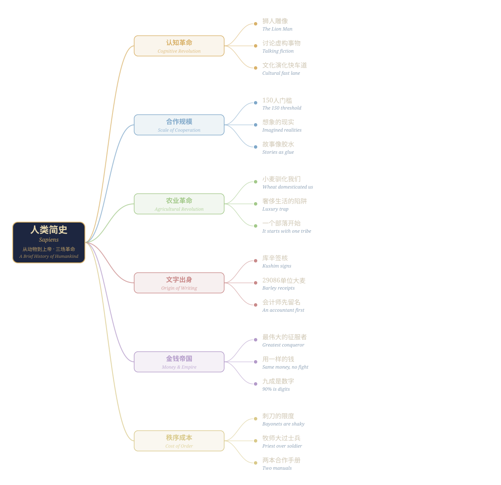

人类简史
〇 · 书籍信息
基本信息
| 书名 | 《人类简史：从动物到上帝》——一部以三场革命为骨架的人类史：约 7 万年前「认知革命」让历史正式启动，约 12000 年前「农业革命」让历史加速发展，约 500 年前「科学革命」让历史画下句点而另创新局 |
|---|---|
| 作者 | 赫拉利：耶路撒冷希伯来大学历史学教授——把生物学、经济学、人类学熔进历史叙事；推荐语概括他的底色：痛恨「人类中心主义」，对家禽家畜的控诉「声泪俱下」，而深藏其中的是对人类命运的深深忧虑 |
| 结构 | 四部分：认知革命（虚构故事的能力）→ 农业革命（史上最大的骗局）→ 人类的融合统一（金钱·帝国·宗教）→ 科学革命（科学与帝国、资本主义的联姻） |
| 体裁 | 宏大简史：火种在「讲故事」——它最有名的论断都不是史实而是视角：小麦驯化了我们、史上第一个留名的人是会计师、智人一点也不明智 |
| 一句话 | 人类统治世界靠的不是基因而是故事：只要同样相信某个故事，大批互不相识的人就能共同合作——国家、金钱、公司、人权，全部是这场想象力的产物。 |
一 · 核心主题总览
三场革命之下反复出现的四组母题：① 虚构故事是超级胶水
智人语言的独特功能是谈论不存在的事物：「狮子是我们部落的守护神」——共同的虚构让智人能够「一起」想象，编织出国家、教会、有限公司。「想象的现实」不是谎话：「指的是某件事人人都相信，而且只要这项共同的信念仍然存在，力量就足以影响世界」——一对十人类斗不过黑猩猩，超过 150 人门槛后，故事的胶水让智人成了万物的主宰。
② 农业革命：史上最大的骗局
「其实不是我们驯化了小麦，而是小麦驯化了我们」——农业让人口增长，却让椎间盘突出、关节炎和疝气流行；「奢侈生活的陷阱」一旦启动就不可逆：「农业革命要成功，并不需要所有部落无异议通过。一切都只从『一个部落』开始」——采集部落只剩逃跑或入伙两种选择，旧的生活方式注定凋零。
③ 金钱：史上最成功的征服者
「这位征服者就是金钱」——「大家讲到不同的神就易有争执，说到不同的王也可能大打出手，但用起一样的钱却是和乐融融」；连本·拉登恨美国的一切，用起美元却十分顺手。金钱的魔力来自「人人都想要」的循环：它是人类创造的最普遍的互信系统——而全球金钱超九成只是计算机里的数字。
④ 沉默的帷幕与驯化的反转
采集时代几万年没有文字，「这幅沉默的帷幕如此厚重，我们连这些事情是否曾经发生都难以断定」——史前可能有采集者的成吉思汗与贝多芬，只是帝国没有新加坡大、竹笛没有交响乐团。而驯化的反转贯穿全书：从「小麦驯化了我们」到现代牧场里「生活最悲惨的动物」——演化上的成功者，常常是个体幸福的输家。
二 · 第一段 认知革命 —— 会讲故事的猿—— 狮人雕像 · 150 人门槛 ——
德国的狮人雕像
认知革命的物证是施泰德洞穴的象牙「狮人」雕像（距今约 32000 年）：人身狮头——「最早证明人类可能出现了宗教，以及能够想象出不存在的事物」。语言革命的关键不在信息量：「不论是人类还是许多动物，都能大喊：『小心！有狮子！』但在认知革命之后，智人就能够说出：『狮子是我们部落的守护神。』」——从狮子到守护神，是从事实到想象的一跃。这一跃的回报惊人：智人「依据不断变化的需求迅速调整行为」，走上「文化演化」的快速道路，甩开了「基因演化」那条总是堵车的慢路。
◆ 语言学习 · 概念 · 认知革命
| 认知革命 | 约 7 万年前：智人获得谈论虚构事物的能力——历史的点火器 |
|---|---|
| 狮人雕像 | 施泰德洞穴出土：最早的宗教与想象证据 |
| 文化演化 | 以故事而非基因为载体的演化快速道 |
| 守护神 | 从「有狮子」到「狮子是神」——虚构的一跃 |
句型 ｜ 「小心！有狮子！」vs「狮子是我们部落的守护神。」——两句喊话划出人与动物的界河：前一句传递信息，后一句创建组织——所有宗教、国家、公司的祖句。
150 人门槛与柏林老太太
合作规模的门槛被精确给出：「我们和黑猩猩的不同，是要在超过了 150 人的门槛之后才开始显现，而等这个数字到了一千或两千，差异就已经是天壤之别」——把几千只黑猩猩放进纽约证券交易所或联合国总部，绝对会乱得一塌糊涂。虚构故事的威力由一个活人见证：一位生于 1900 年的柏林老太太，一生经历霍亨佐伦帝国、魏玛共和国、纳粹德国、东德、统一德国五种制度，「虽然她的基因从未改变」——制度全是故事，故事说换就换。
◆ 语言学习 · 概念 · 合作规模
| 150 人门槛 | 自然协作的上限：超过即需共同虚构维持 |
|---|---|
| 想象的现实 | 人人都信且影响世界的信念——不是谎话 |
| 社会建构 | 故事的学术别名：国家、公司、货币的材质 |
| 基因未改 | 柏林老太太的五朝经历：故事更迭快过基因 |
习语 ｜ 「虽然她的基因从未改变，她却经历过了五种非常不同的社会政治制度。」——一个老太太顶一部制度史：人这一生换五套故事，DNA 一行代码都没动——虚构世界的更新速度，是生物学的一万倍。
三 · 第二段 农业革命 —— 史上最大的骗局—— 小麦驯化我们 · 奢侈陷阱 ——
小麦驯化了我们
第五章的著名翻案：「智人的身体演化目的并不是为了从事这些活动，我们适应的活动是爬爬果树、追追瞪羚，而不是弯腰清石块、努力挑水桶」——进入农业时代，椎间盘突出、关节炎和疝气大量出现，人类被迫永久定居在麦田旁边。结论掷地有声：「其实不是我们驯化了小麦，而是小麦驯化了我们。『驯化』（domesticate）一词来自拉丁文 domus，意思就是『房子』。但现在关在房子里的可不是小麦，而是智人」。
◆ 语言学习 · 概念 · 农业革命
| 农业革命 | 约 12000 年前：从采集到种植——历史加速的引擎 |
|---|---|
| 小麦驯化我们 | 本书最著名的反转：驯化者的地位对调 |
| domus | 「驯化」的词源：房子——被关进房子的是智人 |
| 脊椎的代价 | 农业的生理账单：椎间盘突出、关节炎、疝气 |
句型 ｜ 「不是我们驯化了小麦，而是小麦驯化了我们。」——主宾对调的一句话成了文化符号：任何让你「离不开」的东西，都可能反过来在驯化你——小麦、手机、房贷，同一条逻辑。
奢侈生活的陷阱
陷阱的机制被讲成不可逆的棘轮：「农业革命要成功，并不需要某个地区的所有部落都无异议通过。一切都只从『一个部落』开始」——农业部落人口暴增，靠人数就能大胜采集部落；剩下的人只有逃跑或入伙两条路，「无论哪种选择，都代表旧的生活方式注定将要凋零」。而现代版本仍在续写：「三不五时，总有些反对提高机械化和自动化的勒德分子坚持不用电子邮件」——每一次便利的普及，都是下一轮陷阱的开工仪式；奢侈品最后都会变成必需品，然后长出新的必需品。
◆ 语言学习 · 概念 · 棘轮陷阱
| 奢侈生活的陷阱 | 便利 → 人口增长 → 依赖加深 → 不可回头的循环 |
|---|---|
| 一个部落 | 陷阱的启动条件：不需要全员同意，一个先例就够 |
| 勒德分子 | 拒绝新技术的人——几千年前拒绝农业的部落的后裔 |
| 注定凋零 | 旧生活方式的判决书：不因优劣，只因人数 |
习语 ｜ 「一切都只从『一个部落』开始。」——不可逆性的通俗讲法：制度、技术、陷阱都不需要全员投票——第一个先行者，就是历史的车头。
四 · 第三段 融合统一 —— 会计师与金钱—— 库辛 · 最伟大的征服者 ——
史上第一个名字属于会计师
文字诞生的故事有个意外的主角：乌鲁克泥板（约公元前 3400—前 3000 年）记载「37 个月内收到了 29086 单位的大麦，并由名叫『库辛』的人签核」——「如果库辛真的是个名字，他可能就是史上第一个我们知道名字的人！……史上第一个记下的名称或名字，是属于一个会计师，而不是什么先知、诗人，或是伟大的征服者」。文字起初不是为诗歌而生：是为数大麦、记账目——最早的书写系统是一套会计软件，最早的签名盖在一张收据上。
◆ 语言学习 · 概念 · 文字的出身
| 库辛 | 乌鲁克泥板签核人：史上第一个留名者——会计师 |
|---|---|
| 泥板 | 文字的最初载体：行政文书，不是文学 |
| 会计起源 | 书写系统的第一使命：数大麦、记收据 |
| 签核 | 人类第一个写下的名字所做的事：确认一笔账 |
习语 ｜ 「史上第一个记下的名字，是属于一个会计师，而不是什么先知、诗人，或是伟大的征服者。」——文明史的黑色幽默开场：文学自认是文字的正宫，考古出来说：账房才是原配。
金钱的味道
第十章给货币史一个惊人的定位：「史上最伟大的征服者……这位征服者就是金钱」——神让人争执、王让人开战，唯独「用起一样的钱却是和乐融融」。金钱的运转原理是循环互信：「人人都想要钱，是因为其他人也都想要钱」——鞋匠不必记苹果换山羊的汇率，只要人人都收钱。它的实体早已蒸发：「全球金钱总和为 60 兆美元，但所有硬币和钞票的金额加起来还不到 6 兆美元——所有的钱有超过九成都只是显示在计算机上的数字而已」——人类最牢固的互信系统，九成九住在服务器里。
◆ 语言学习 · 概念 · 货币互信
| 人人都想要 | 金钱的基本特性：循环定义的价值——互信的发动机 |
|---|---|
| 史上最伟大的征服者 | 金钱的封号：唯一让全人类自愿统一的系统 |
| 60 兆 vs 6 兆 | 账面货币与实体钞票的比例：钱九成是数字 |
| 本·拉登的美元 | 极端例证：恨一个国家的一切，不恨它的货币 |
句型 ｜ 「讲到不同的神就易有争执，说到不同的王也可能大打出手，但用起一样的钱却是和乐融融。」——三段排比完成货币加冕：金钱是人类唯一不引起战争反而阻止战争的通用语。
五 · 第四段 信念与秩序 —— 汉谟拉比与刺刀—— 合作手册 · 牧师与士兵 ——
两本合作手册
「由想象所建构的秩序」被拆解为两部经典：公元前 1776 年的《汉谟拉比法典》——几十万古巴比伦人的合作手册；公元 1776 年的美国《独立宣言》——现代数亿美国人的合作手册。相隔 3500 年，功能相同。而合作不总是温情：「『合作』听起来应该十分无私而且利他，但这件事并不总是出于自愿，而且还更少能够公平」——监狱和集中营也是合作网络；农民一年的辛劳，收税官大笔一挥就化为乌有。
◆ 语言学习 · 概念 · 秩序手册
| 合作手册 | 本书对法典与宣言的共同命名：秩序=可执行的故事 |
|---|---|
| 由想象建构的秩序 | 大型合作网络的本质：社会规范来自共同虚构 |
| 压迫与剥削 | 合作的阴影面：网络越高效，收割越方便 |
| 3500 年 | 两本手册的时距：故事换了内核，机制没换 |
句型 ｜ 「《汉谟拉比法典》……合作手册；《独立宣言》……合作手册。」——把圣典与文献降维成同一类物品：一切统治文本的底层都是操作手册——区别只在分配给谁、收割谁。
牧师比士兵便宜
秩序的维持成本学：塔列朗总结几十年政治生涯：「刺刀确实可以做很多事，但想安心地依靠它可是不太容易」——「很多时候，一名牧师的效果大过一百个士兵，而且更便宜、更有效」。更深一层：「如果士兵、狱卒、法官和警察根本不相信某个想象建构的秩序，他们又怎么会照办？想靠威胁来维持军队组织显然不太可行——至少必须有某些军官和某些士兵真正相信某些事情，不管是上帝、荣誉、祖国、男子气概，或是单纯相信金钱也成」——暴力机器的底座也是故事：士兵相信的东西，决定刺刀指向哪里。
◆ 语言学习 · 概念 · 秩序成本
| 刺刀的限度 | 塔列朗经验：暴力可靠但坐不稳——须换成信念 |
|---|---|
| 牧师经济学 | 一名牧师>一百个士兵：信念维持的成本优势 |
| 士兵的信念 | 暴力机器的地基：上帝、荣誉、祖国、男子气概、金钱 |
| 主体间 | 存在于众多意识连接网络中的事物：法律、金钱、神、国家 |
习语 ｜ 「刺刀确实可以做很多事，但想安心地依靠它可是不太容易。」——塔列朗的一句政坛箴言被升格为理论：一切以暴力开场的秩序，最终都要以故事收场——枪杆子里出政权，故事里坐天下。
六 · 人物图鉴与成长弧线—— 主角配角 · 一张表看穿 ——
主要人物
赫拉利——希伯来大学历史学教授、全书叙事者——用三场革命组织人类史的反传统写作者：他的每个论断都带一记反转（小麦驯化我们、历史从无公正）
智人——全书主角与被告——「一个非常糟糕、令人失望的物种」与「万物的主宰」一身二任：靠故事称王，也因故事失控
小麦——农业革命的反派主角——以驯化者的身份完成对驯化者的反驯化：全书最成功的修辞发明
金钱——「史上最伟大的征服者」——超越神与君王的统一者：唯一不靠暴力、自愿加入的全球秩序
次要人物（功能位）
| 库辛 | 乌鲁克泥板的签核人——史上第一个留名者是会计师：文明开局的一记幽默 |
|---|---|
| 柏林老太太 | 生于 1900 年活到 100 岁——一生五套制度、基因一行未改：虚构世界迭代速度的活证词 |
| 汉谟拉比 | 公元前 1776 年法典的作者——古巴比伦合作手册的编纂者，与《独立宣言》隔空同框 |
| 塔列朗 | 变色龙式法国政治家——「刺刀论」的原始出处：暴力坐不稳天下的一句证词 |
七 · 主题与象征—— 每个道具都在说话 ——
| 狮人 ↔ 想象力 | 施泰德雕像——人身狮头是虚构能力的第一块化石 |
|---|---|
| 小麦 ↔ 反驯化 | 主宾对调——我们种了它，它圈养了我们 |
| 泥板 ↔ 账本 | 最早的文字——诗歌以为自己是起点，考古出示了收据 |
| 150 ↔ 门槛 | 自然协作的极限——超过这条线，只能靠故事搭桥 |
| 沉默的帷幕 ↔ 史前 | 无文字的年代——帷幕后的采集者可能有贝多芬，只是竹笛声传不出来 |
八 · 写作手法赏析—— 怎么写，就能怎么学 ——
① 三革命骨架
认知·农业·科学三场革命——把百万年历史压缩成三个转折点，简史的真功夫是敢删
② 反转句法
几乎每章一个主宾对调——「小麦驯化了我们」「第一个名字是会计师」：论断的传播力来自句式的意外
③ 跨学科嫁接
生物学、经济学、人类学入史——椎间盘与汇率同台，脊椎账单与货币账单并列
④ 人物证词
库辛、柏林老太太、塔列朗——宏大叙事里塞进小人物，让数据开口说人话
九 · 名段欣赏—— 原文精读 · 逐段赏析 ——
十 · 金句摘录—— 14 条 · 中英对照 · 带出处 ——
"大约7万年前，「认知革命」让历史正式启动。大约12000年前，「农业革命」让历史加速发展。而到了大约不过是500年前，「科学革命」可以说是让历史画下句点而另创新局。"—— 引言
"「讨论虚构的事物」正是智人语言最独特的功能。"—— 第二章
"就算是大批互不相识的人，只要同样相信某个故事，就能共同合作。"—— 第二章
"智人的合作则是不仅灵活，而且能和无数陌生人合作。正因如此，才会是智人统治世界，蚂蚁只能吃我们的剩饭，而黑猩猩则被关在动物园和实验室里。"—— 第二章
"所谓「想象的现实」指的是某件事人人都相信，而且只要这项共同的信念仍然存在，力量就足以影响世界。"—— 第二章
"人类和黑猩猩之间真正不同的地方就在于那些虚构的故事，它像胶水一样把千千万万的个人、家庭和群体结合在一起。这种胶水，让我们成了万物的主宰。"—— 第二章
"其实不是我们驯化了小麦，而是小麦驯化了我们。"—— 第五章
"农业革命要成功，并不需要某个地区的所有部落都无异议通过。一切都只从「一个部落」开始。"—— 第五章
"这幅沉默的帷幕如此厚重，我们连这些事情是否曾经发生都难以断定，遑论详细描述。"—— 第三章
"刺刀确实可以做很多事，但想安心地依靠它可是不太容易。"—— 第六章 · 引塔列朗
"很多时候，一名牧师的效果大过一百个士兵，而且更便宜、更有效。"—— 第六章
"史上第一个记下的名称或名字，是属于一个会计师，而不是什么先知、诗人，或是伟大的征服者。"—— 第七章
"大家讲到不同的神就易有争执，说到不同的王也可能大打出手，但用起一样的钱却是和乐融融。"—— 第十章
"全球金钱总和为60兆美元，但所有硬币和钞票的金额加起来还不到6兆美元。"—— 第十章
十一 · 拓展阅读—— 原文 · 词条 · 译文 ——
十二 · 个人感悟与心得—— 三点心得 ——
三点感悟
① 故事是基础设施
全书最有用的抽象：国家、货币、公司不是建筑在土地上，是建筑在「共同相信」上——所以维护合作的第一要务不是实体投入，是维护那个故事的可信度；组织衰落常始于故事失信，而非资产减值。
② 警惕你的小麦
「小麦驯化了我们」的当代版随处可见：房贷、职级、粉丝数、算法推荐——凡是让你投入越多、回退越难的东西，都在悄悄完成驯化；每年检查一次「我圈养了什么」，是认知层面的体检。
③ 便利没有回头路
奢侈生活的棘轮法则：技术普及从不需要全员同意，一个先行者就够——所以对新技术（包括 AI）的态度不该是「要不要用」，而是「用上之后，我准备怎么保留说『不』的能力」。
一部七万年的简史，说穿了只有一句话：我们靠讲故事登上了食物链顶端——接下来要小心的，是别让故事把我们讲没了。
十三 · 一页速查（复习用）
| 三场革命 | 认知（7 万年前）→ 农业（12000 年前）→ 科学（500 年前）：历史的三个变速点 |
|---|---|
| 虚构的胶水 | 150 人门槛之外全靠故事：国家、金钱、公司、人权皆是想象的现实 |
| 农业骗局 | 小麦驯化我们 + 奢侈生活的陷阱：便利一旦普及就不可逆 |
| 金钱加冕 | 史上最伟大的征服者：人人想要的循环互信，九成已是服务器里的数字 |
| 秩序成本学 | 一名牧师大过一百个士兵：暴力开场，故事坐天下 |
十四 · 全书思维导图—— 一图纵览 ——

一图纵览全书骨架 · 中英双语对照 · 手机端可左右滑动查看全图